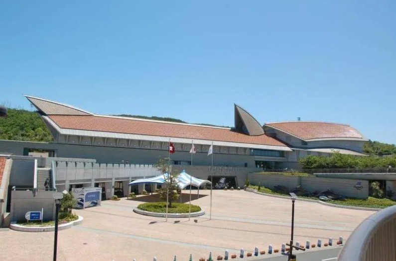
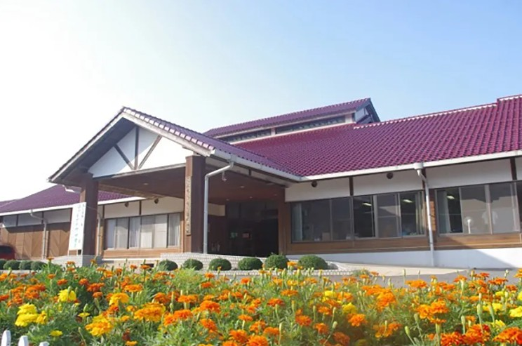
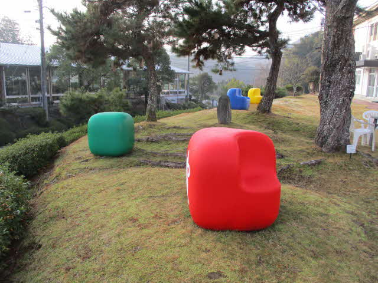

体験・つながり
『あかの場所』
体を動かしたり、実際に何かを体験したり。農業・ボランティア・多世代の人たちとの交流ができます。
この場所の一覧

子どもの居場所
ホームページ ↗
こうとうキャンパス（あさりこども園）
| 対象 | 卒園した生徒・法人で働く保護者の子ども |
| どんなサポートや活動をしている？ | 園児たちのサポート |
| 時間 | 平日 9:00〜17:00 |
| 費用 | 無料 |
| 利用ルート | 口コミ |
| 住所 | 江津市浅利町336-4 |
| 電話 | 0855-55-1024 |

体験・自然
しまね海洋館 アクアス
| 対象 | 学校を通して依頼のあった児童生徒（要相談） |
| どんなサポートや活動をしている？ | アクアスの活動を中心とした飼育の補助など |
| 時間 | 要相談 |
| 費用 | 無料 |
| 利用ルート | 学校が窓口となって受け入れ（現在検討中） |
| 住所 | 浜田市久代町1117-2 |

自然体験・アウトドア
島根県立少年 自然の家
| 対象 | 浜田・益田管内の教育支援センター・放課後等デイサービス・児童相談所・児童養護施設等を利用する児童・生徒および引率者（保護者）。※教育支援センター未利用でも相談可。 |
| どんなサポートや活動をしている？ | 野外炊飯活動・自然体験活動など |
| 時間 | R8年5月1日〜R9年2月28日（休所日・主催事業日等を除く）8:40〜22:00 |
| 費用 | 児童・生徒：炊飯活動費・教材費無料 ／ 引率者（保護者）：実費 |
| 利用ルート | 教育支援センターや放課後等デイサービスへのチラシ案内・校長会等での広報 |
| 住所 | 江津市松川町太田610 |
| 電話 | 0855-52-0716 |

体験・居場所づくり
株式会社コガワ計画 Mランド益田校
| 対象 | 社会に出る前の準備体験が必要な方 |
| どんなサポートや活動をしている？ | 施設やシステムを使った居場所の「機会」づくり |
| 時間 | 常時は難しいため、繁忙期でない時期・時間に応じて対応 |
| 費用 | 基本無料（今後の内容によっては使用料等が発生する場合あり） |
| 利用ルート | まずプレイベントで開催し、反応や効果を検証予定 |
| 住所 | 益田市安富町3330-1 |
| 電話 | 0856-31-5052 |

児童発達支援・放課後等デイサービス
児童発達支援 放課後等デイサービス あじさい
| 対象 | 受給者証をお持ちの就学前〜高3（江津市内・大田市西部にお住いの方） |
| どんなサポートや活動をしている？ | ホースセラピーを中心に活動。子ども・家庭・地域が互いに結ばれ、支え合いながら一人ひとりの個性が自然に花開くような居場所を目指します。 |
| 時間 | 児童発達支援：月〜金 9:30〜11:00 ／ 放課後等デイサービス：月〜金 13:30〜17:00（17時送迎出発） |
| 費用 | 要 |
| 利用ルート | HP（花の村）・パンフレット・チラシ・相談支援センター |
| 住所 | 江津市後地町3165-3 |
| 電話 | 090-8034-3331 |

居場所・体験
Instagram ↗
クレアト
| 対象 | 小学生・中学生 |
| どんなサポートや活動をしている？ | 「来れば、跡市に。」そんなノリでふらっと来ることができて、自分の「やりたい」をクリエイトする場所。跡市の自然の中で思いっきり遊ぶ・工作やクッキングなど何かを作る。 |
| 時間 | 火曜 9:00〜15:00（ときまち間の送迎あり） |
| 費用 | 無料（活動内容によって実費かかる場合あり） |
| 利用ルート | 公式インスタグラム・ときまちからの紹介など |
| 住所 | 江津市跡市町632 |
| 電話 | 0855-56-2104 |

居場所・交流
フリースペース結のひろば（里山子ども園わたぼうし）
| 対象 | 誰でも |
| どんなサポートや活動をしている？ | プレーパーク活動。年齢・居住地を問わず誰でも利用できる交流・遊びの場を提供。親子や地域住民がつながる居場所づくりを目的としています。 |
| 費用 | 無料 |
| 利用ルート | 口コミ・SNS発信 |
| 住所 | 島根県江津市跡市町625-1 |
| 電話 | 0855-56-2104 |

子どもの居場所
さくらこども園
| 対象 | 卒園した生徒・法人で働く保護者の子ども |
| どんなサポートや活動をしている？ | 園児たちのサポート・環境整備等 |
| 時間 | 平日 9:00〜17:00 |
| 費用 | 無料（食事代は必要） |
| 利用ルート | 電話・メール |
| 住所 | 江津市後地町843-1 |
| 電話 | 0855-55-0017 |